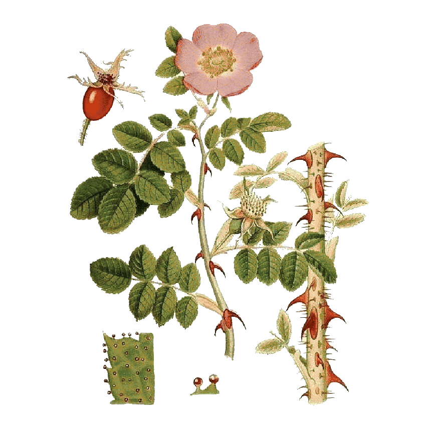
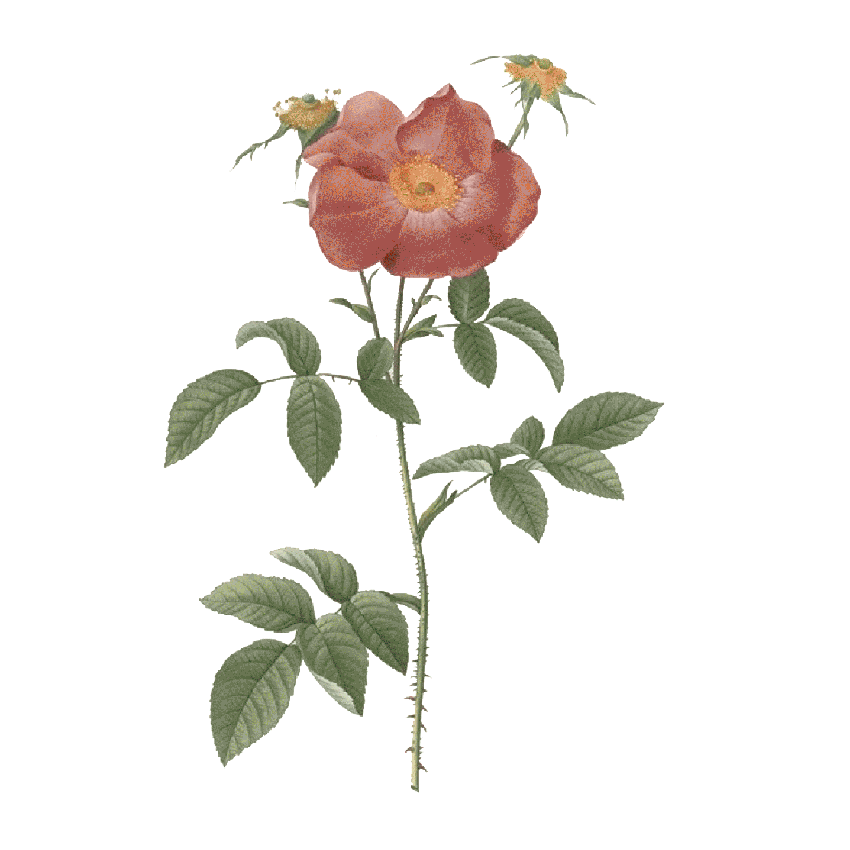
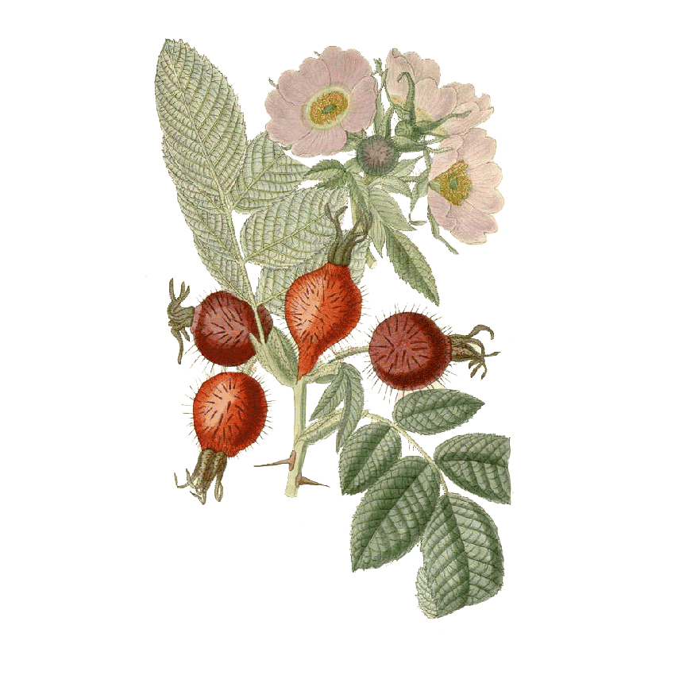
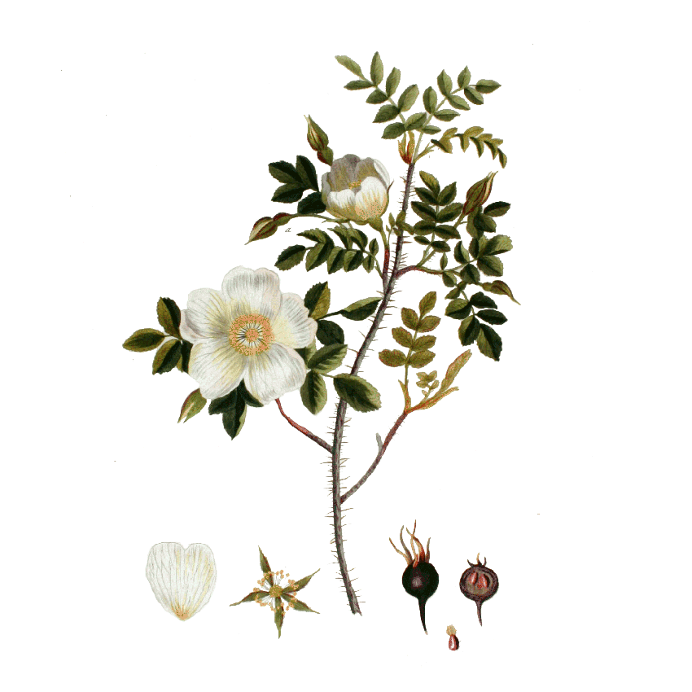
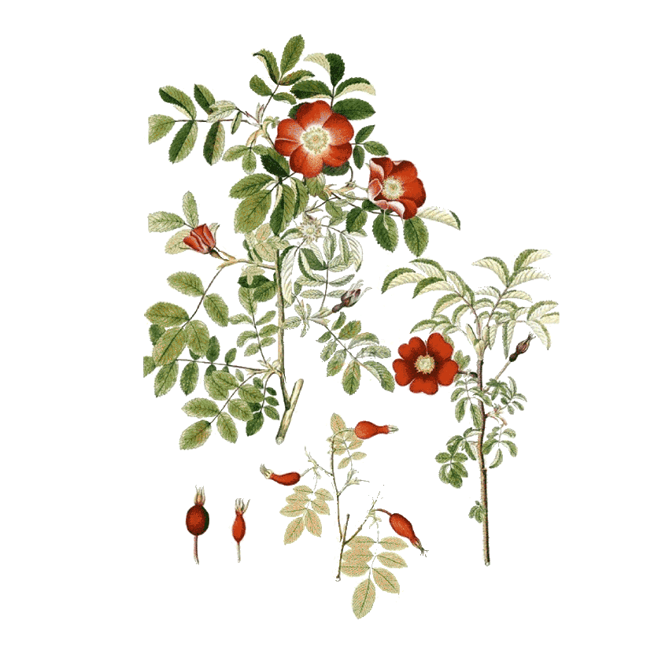
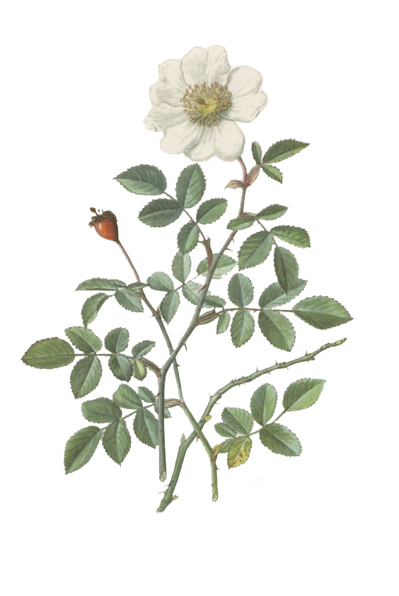
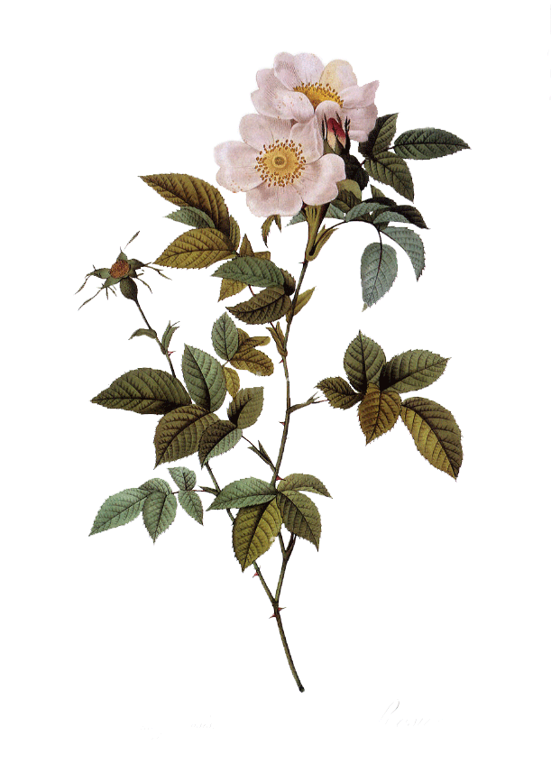

Dog rose (Rosa canina)
The Dog Rose is a versatile and resilient shrub species native to Europe, Asia and North Africa. Its name originates from the belief that its roots were effective against bites from rabid dogs. With delicate pink or white blooms and sharp thorns adorning its stems, the Dog Rose thrives in a variety of habitats, from woodlands to hedgerows. Beyond its ornamental beauty, this species boasts a rich history of medicinal uses, with its fruits, known as rose hips, prized for their high vitamin C content and antioxidant properties. With its robust nature and valuable contributions to both ecosystems and human health, the Dog Rose stands as a symbol of resilience and natural healing.

Sweetbriar (Rosa rubiginosa)
Sweetbriar is a fragrant and resilient species of wild rose native to Europe and western Asia. Its name stems from the sweet scent emitted by its pink blooms, which adorn thorny stems adorned with distinctive glandular hairs. Known for its vigorous growth and ability to thrive in various soil types, Sweetbriar often forms dense thickets in open woodlands and along hedgerows. Beyond its aesthetic appeal, this species produces small red hips that are prized for their culinary and medicinal uses, adding both flavour and nutritional value to jams, teas, and skincare products. With its charming appearance and versatile applications, Sweetbriar remains a beloved fixture in gardens and natural landscapes alike.

French rose (Rosa gallica)
The French Rose is a classic and revered species of old garden rose originating from Central and Western Europe. Renowned for its rich history and cultural significance, this rose variety has been cherished for centuries for its exquisite beauty and intoxicating fragrance. With its distinctive semi-double to double blooms in shades of deep pink, crimson, or purple, the French Rose exudes elegance and charm in gardens and floral arrangements alike. Despite its ancient origins, this species continues to captivate enthusiasts with its resilience and adaptability to various climates and soil conditions. As a symbol of romance and refinement, the French Rose holds a special place in the hearts of gardeners and rose lovers around the world.

Apple rose (Rosa villosa)
The Apple Rose or the Hairy Rose, is a hardy and resilient species native to Europe and western Asia. Characterized by its dense covering of fine hairs on both stems and leaves, this wild rose species thrives in diverse habitats ranging from rocky slopes to woodland edges. Its pale pink to deep rose blooms, adorned with prominent golden stamens, add a touch of elegance to its rugged appearance. Beyond its ornamental value, Rosa villosa produces small, round, red-orange hips that are rich in vitamin C and antioxidants, making them a valuable resource for culinary and medicinal purposes. With its robust nature and multifaceted contributions, Rosa villosa stands as a testament to the beauty and resilience of wild roses in natural landscapes.

Burnet rose (Rosa spinosissima)
The Burnet Rose or Scots Rose is a resilient and adaptable wild rose species native to Europe and western Asia. Its name means "most spiny" and reflects its densely thorny stems and branches, providing protection against browsing animals. It produces delicate white to pink blooms with a sweet fragrance, adorning its spiny branches from late spring to early summer. Growing in a variety of habitats, from coastal dunes to upland moors, it thrives in well-drained soils and tolerates harsh environmental conditions. Its small, round red hips provide a valuable food source for wildlife and have been historically used in herbal medicine for their astringent properties, making the burnet rose a cherished species in both natural and cultural landscapes.

Small leaved sweet briar (Rosa agrestis)
Alpine rose (Rosa pendulina)
The Alpine Rose or Drooping Brier, is a charming and resilient wild rose species native to mountainous regions of Europe. Its name refers to the drooping habit of its branches, which gracefully cascade down rocky slopes and alpine meadows. With its delicate pink blooms adorning slender stems, the Alpine Rose adds a touch of beauty to rugged landscapes, blooming from late spring to early summer. Despite its alpine origins, this species exhibits remarkable adaptability, thriving in a variety of soil types and altitudes, from rocky scree slopes to limestone cliffs. Its small, round red hips, rich in vitamin C and antioxidants, provide sustenance for wildlife and have been traditionally used in herbal remedies, highlighting the multifaceted value of Rosa pendulina in mountain ecosystems.

Thicket dog rose (Rosa corymbifera)
A species of wild rose native to Europe, found mostly in southern Europe and occasionally as far as the Caucasus. It is a close relative of, and very similar to the sweet briar, but with smaller leaves, white to blush petals, and very little odour from either the flowers or the leaves. It is a hardy and adaptable species, capable of thriving in a variety of soil types and environmental conditions, including full sun to partial shade. It is commonly found in hedgerows, woodland edges, and along roadsides, where it forms dense thickets that provide habitat and food for various wildlife species. It is also known for its abundant pink or white flowers, which bloom in late spring to early summer.

It is a species of wild rose native to various regions of Europe and Asia. This deciduous shrub typically grows to a height of 1-2 meters and displays a sprawling, bushy habit. It is characterized by its attractive clusters of white to pale pink flowers, which bloom in late spring to early summer. These fragrant blossoms are composed of five petals and are often followed by small, round hips that range in colour from orange to red. Its foliage consists of pinnate leaves with serrated edges, providing an elegant backdrop to the profusion of blooms. This species is known for its resilience and adaptability, thriving in a variety of soil types and tolerating a range of environmental conditions, including partial shade.
